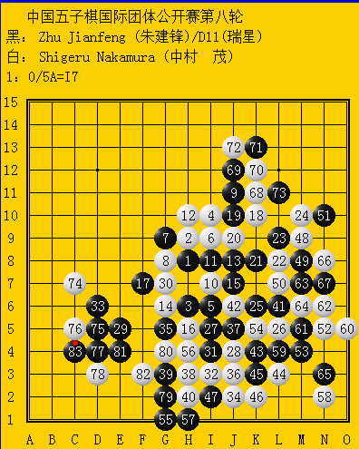

中村茂金身被破。
#1 中村茂金身被破。作者：励精 发表时间：2012-5-4 12:54:24
快讯，中村茂死在朱建锋的乱刀之下。［ 茗弈小刀 于 2012-5-4 13:28:53 时花20金币送鲜花一朵］
［ 茗弈小刀 于 2012-5-4 13:28:55 时花20金币送鲜花一朵］
［ 茗弈小刀 于 2012-5-4 13:29:16 时花20金币送鲜花一朵］
［ 团子 于 2012-5-4 13:46:00 时花20金币送鲜花一朵］
［ 团子 于 2012-5-4 13:46:25 时花20金币送鲜花一朵］
［ 团子 于 2012-5-4 13:46:53 时花20金币送鲜花一朵］
［ 隐着 于 2012-5-5 17:00:07 时花20金币送鲜花一朵］
#2 Re:中村茂金身被破。作者：一侠客一 发表时间：2012-5-4 13:17:36
小猪好牛
#3 Re:中村茂金身被破。作者：一侠客一 发表时间：2012-5-4 13:19:53
不知道曹大神搞定大角没有。。#4 Re:中村茂金身被破。作者：裁决殿雪月 发表时间：2012-5-4 13:23:25
中村，可惜了了#5 Re:中村茂金身被破。作者：小帮帮 发表时间：2012-5-4 13:34:01
总是这么给力，叫别人以后怎么混啊？
#6 Re:中村茂金身被破。作者：聚贤联盟特使 发表时间：2012-5-4 13:38:54
朱建锋挑落中村茂作者：现场 文章来源：中国连珠网
中国五子棋国际团体公开赛决赛，中国1队2台朱建锋战胜日本2台之前不败的“战神”中村茂。
#7 Re:一侠客一【==Re:中村茂金身被破。==】作者：烟雨淋晨尘 发表时间：2012-5-4 13:44:02
引用：看中珠网的消息，曹大神被搞定了。
原文由 一侠客一 发表于 2012-5-4 13:19:53 :
不知道曹大神搞定大角没有。。
#8 Re:中村茂金身被破。作者：三道 发表时间：2012-5-4 13:48:32
是瑞星吧。。。
#9 Re:励精【==中村茂金身被破。==】作者：冰雪笑醉 发表时间：2012-5-4 13:49:21
#10 Re:中村茂金身被破。作者：dongww 发表时间：2012-5-4 15:03:24
http://www.rifchina.com/renju/game.asp?r=2&g=1967&m=1［ 失落刀 于 2012-5-4 17:55:59 时奖励此帖[金币加 100 威望加1］0+1
［此帖子已被 失落刀 在 2012-5-4 17:56:55 编辑过］
#11 Re:中村茂金身被破。作者：白衣神童小剑魔 发表时间：2012-5-4 15:31:00
又是瑞星。。#12 Re:中村茂金身被破。作者：天真無邪 发表时间：2012-5-4 15:33:19
中村是攻崩的 才不是什么死在乱刀下…［ 极地剑客 于 2012-5-4 19:04:31 时花20金币送鲜花一朵］
#13 Re:中村茂金身被破。作者：小丸.net 发表时间：2012-5-4 15:47:28
中村这孩子太想赢了。。。。#14 Re:天真無邪【==Re:中村茂金身被破。==】作者：梧桐风 发表时间：2012-5-4 16:16:04
引用：有棋谱没？
原文由 天真無邪 发表于 2012-5-4 15:33:19 :
中村是攻崩的 才不是什么死在乱刀下…
#15 Re:梧桐风【==Re:天真無邪【==Re:中村茂金身被破。==】==】作者：白衣神童小剑魔 发表时间：2012-5-4 16:17:40
#16 Re:梧桐风【==Re:天真無邪【==Re:中村茂金身被破。==】==】作者：白衣神童小剑魔 发表时间：2012-5-4 16:19:23
#17 Re:中村茂金身被破。作者：臭棋居士 发表时间：2012-5-4 17:57:01
中村当然想赢啦，3只中国队对一个日本对。他当然想通过胜利把命运掌握在自己手里
#18 Re:中村茂金身被破。作者：小小亦默 发表时间：2012-5-4 18:10:18
表示LZ严重用词不当
#19 Re:中村茂金身被破。作者：游戏人间 发表时间：2012-5-4 18:32:12
不是想赢不想赢的问题。。33以后白面对外围黑很好的局面必然不甘心跟随，跟随也不是中村的性格。右下这里肯定是没计算清楚就动手的。。。攻崩自然也在情理之中。［ 与郎共五 于 2012-5-4 18:36:51 时花20金币送鲜花一朵］